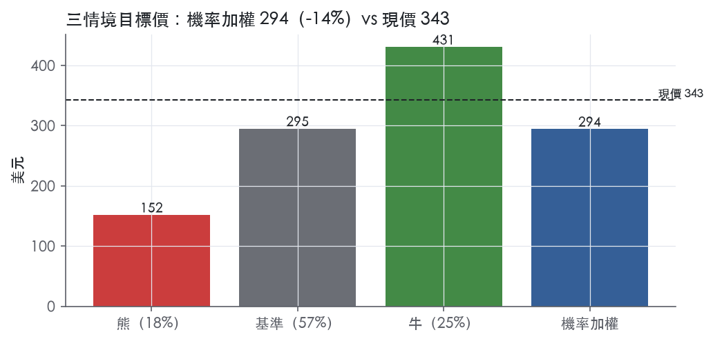
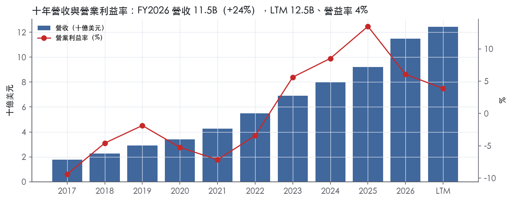
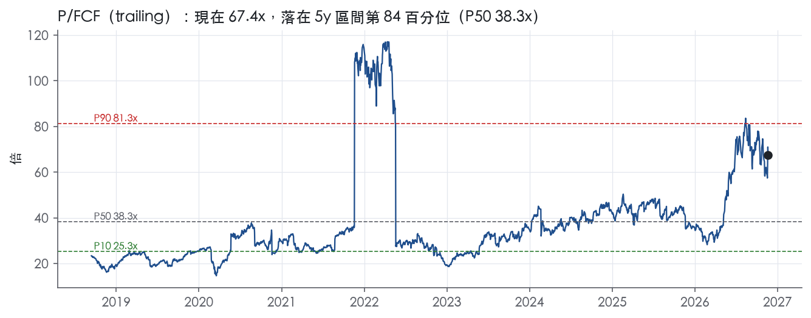
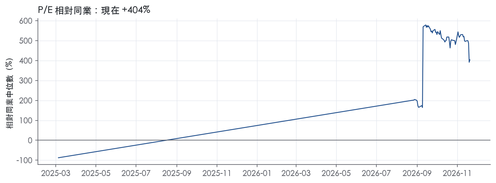
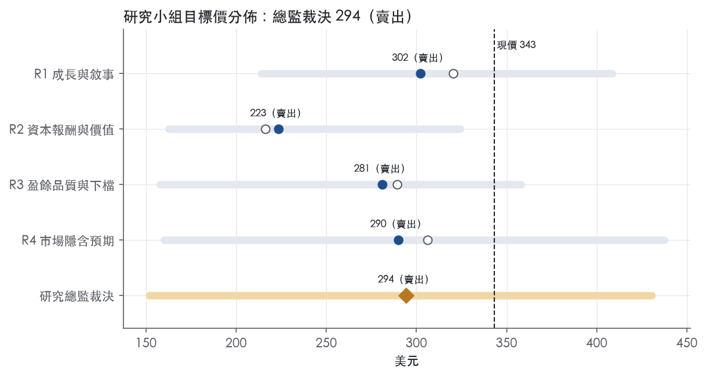
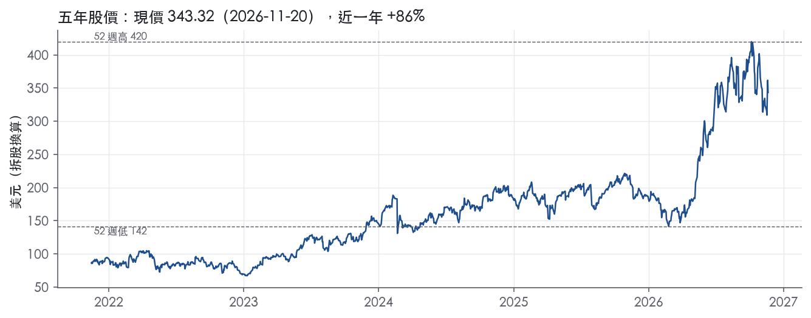

評等總表 › 資訊科技 › PANW
成長上修入驅動，倍數回歸，看空｜評等 賣出｜目標價 294
| 報告日 | 評等 | 目標價 | 當時股價 | 超額報酬 |
|---|---|---|---|---|
| 2026-11-20 | 賣出 | 294 | 343 | -23.8% |
| 2026-10-30 | 賣出 | 309 | 366 | -25.4% |
| 快評 | 動作 | 結論 |
|---|---|---|
| 2026-11-18 | 維持 | 營益遠低於預測，淨利靠一次性稅益 |
| 評等 | 賣出 |
| 12 個月目標價 | 294 美元 |
| 現價 | 343.32 美元（2026-11-20） |
| 預期報酬 | 股價 -14.3%＋股息 0.0%＝總報酬 -14.3%；同業籃門檻 9.5%，超額 -23.8% |
| 估值方法 | P/FCF 52.0x，套在第 5–8 季的自由現金流（也就是一年後的未來四季） |
| 三情境 | 熊 152／基準 295／牛 431 |
| 研究流程 | 四位研究員兩輪辯論＋研究總監裁決 |
| 資料來源 | SEC EDGAR XBRL、Tiingo、FRED（全免費） |
成長上修入驅動，倍數回歸，看空（研究總監裁決，四位研究員兩輪辯論後）
評等 賣出｜12 個月目標價 294 美元（總監三情境機率加權 303 與研究員中位數 285 各半）｜現價 343.32（2026-11-20）
預期報酬：股價 -14.3%＋股息 0.0%＝總報酬 -14.3%。同業籃門檻 9.5%，超額 -23.8%。
估值方法：P/FCF 52.0x，套在第 5–8 季的自由現金流（也就是一年後的未來四季）。三情境：熊 152（18%）／基準 295（57%）／牛 431（25%）。
什麼會讓研究總監改變看法：FY2027Q2 與 Q3 NGS ARR 皆高於指引上緣、FY2027Q3 滿週年後營收年增 ≥25% 且 GAAP 營益率 ≥10%，我把倍數上移到 65x 並轉中性；FY2027Q2 RPO 低於 21.5B 或全年指引下修，熊機率上調。
| 過去四季（實際，FY2027Q1） | 未來四季 | 第 5–8 季 | 第 9–12 季 | |
|---|---|---|---|---|
| 營收（B） | 12.5B | 15.3B | 17.8B | 19.7B |
| 營收成長 | 30.3% | 23.0% | 16.0% | 11.0% |
| 營業利益率 | 3.9% | 6.0% | 9.0% | 11.5% |
| EPS（美元） | 0.59 | 0.76 | 1.28 | 1.75 |
| EPS 成長 | -62.6% | 29.4% | 67.6% | 36.6% |
| 每股股息（美元） | — | 0.00 | 0.00 | 0.00 |
| P/E（現價） | 581.0x | 449.0x | 267.8x | 196.0x |
| 股息殖利率（現價） | — | — | — | — |
過去四季為申報數字；預測為研究總監的假設、程式計算。倍數與殖利率都用現價計算，用來看現價對應各期獲利的高低。
| 項目 | 上次（2026-11-01） | 這次（2026-11-21） | 變動 |
|---|---|---|---|
| 評等 | 賣出 | 賣出 | ＝ |
| 機率加權目標價（美元） | 309 | 294 | -4.9% |
| 超額報酬 | -25.4% | -23.8% | +1.6 pp |
| 目標倍數 | 55x | 52x | — |
| 未來四季營收成長 | 24.0% | 23.0% | -1.0 pp |
| 未來四季營益率 | 8.0% | 6.0% | -2.0 pp |
| 未來四季 EPS（美元） | 1.04 | 0.76 | -26.7% |
| 熊／基準／牛機率 | 20／57／23 | 18／57／25 | — |
程式計算；「未來四季」各自從當次報告的資料起點算。研究總監逐點說明見第八章「與上次報告比較」。
| 情境 | 機率（歷史） | 故事 | 未來四季營收成長 | 第 5–8 季營益率 | 倍數 | 目標價 | 股價漲跌 |
|---|---|---|---|---|---|---|---|
| 熊 | 18%（10%） | 風險表第 1、2、5 條：FY2027Q2 RPO <21.5B 或 NGS ARR <10.20B，整合費用拖長、用量優化，帳單放緩使口徑因子縮至 1.30、倍數回帶 P50；第 3 條 Applied Compute 換股稀釋 5% | 20.0% | 6.0% | 32.0x | 152 | -55.8% |
| 基準 | 57%（66%） | FY2027 指引達標小幅超越，滿週年後帳面成長降到 16% 上下，GAAP 營益率緩修，倍數由 67x 向 52x 回歸 | 23.0% | 9.0% | 52.0x | 295 | -14.1% |
| 牛 | 25%（24%） | 滿週年後有機成長仍逾二成、FY2028 指引 ≥22%，市場接近維持現行倍數（低於持平 67.5x） | 27.0% | 12.0% | 65.0x | 431 | 25.4% |
目標價由程式依研究總監的驅動與倍數計算；機率由研究總監給定。括號內是歷史頻率：把這檔股票過去十年 12 個月報酬的波動形狀，置中在基準情境，結果落在各情境附近的比例。

四位研究員用不同方法各自估值，回應研究總監的質疑後交出第二輪，最後由總監逐點裁決。各研究員的主張見第七章，裁決理由見第八章，完整論證見《研究底稿》。
| 立場（一輪→二輪） | 加權目標價（一輪→二輪） | 評等（一輪→二輪） | 第二輪倍數 | 熊～牛目標價 | |
|---|---|---|---|---|---|
| R1 成長與敘事 | 看空→看空 | 320→302 | 賣出→賣出 | 62.0x | 214～409 |
| R2 資本報酬與價值 | 看空→看空 | 216→223 | 賣出→賣出 | 45.0x | 162～324 |
| R3 盈餘品質與下檔 | 看空→看空 | 289→281 | 賣出→賣出 | 52.0x | 158～358 |
| R4 市場隱含預期 | 看空→看空 | 306→290 | 賣出→賣出 | 50.0x | 160～438 |
| 研究總監裁決 | 看空 | 294 | 賣出 | 52.0x | 152～431 |
目標價由程式依各自的驅動與倍數計算；評等＝機率加權總報酬 − 同業籃門檻。
Palo Alto Networks 是一家全球 AI 網路安全供應商，願景是打造一個「每天都比前一天更安全」的世界¹。公司成立於 2005 年，總部位於加州聖塔克拉拉¹。核心策略是「平台化」——把原本分散的點產品整合成緊密整合的架構，協助客戶簡化安全架構¹。終端客戶涵蓋企業、服務供應商與政府機構，產業分布包括教育、能源、金融服務、政府、醫療、網路媒體、製造、公共部門與電信¹。公司明確指出，FY2026、FY2025、FY2024 均無單一客戶佔總營收超過 10%¹。本質上這是一家靠併購堆疊壯大、以訂閱與平台鎖定客戶的網安巨頭，和 Broadcom 的半導體＋軟體雙引擎邏輯類似，但護城河建立在安全架構的「集中化平台」敘事上。
公司產品線分為三大平台：Network & AI Security、Cortex、Idira，外加 Threat Intelligence and Advisory Services 四個業務線¹。Network & AI Security 平台提供 SASE（Prisma Access、Prisma SD-WAN）、下一代防火牆（NGFW，涵蓋硬體、CN-Series 容器化與 VM-Series 虛擬化形態）、雲端交付安全服務（CDSS，包含 Advanced Threat Prevention、Advanced WildFire、Advanced URL Filtering 等）以及新興的 Prisma AIRS AI 安全平台與 Strata Cloud Manager 管理工具¹。Cortex 平台聚焦安全運營與可觀測性，核心產品包括 Cortex XSIAM（AI 驅動的 SecOps，整合 SIEM、XDR、SOAR、CDR、ASM）、Cortex XDR、Cortex XSOAR、Cortex Xpanse，以及透過收購 Chronosphere 取得的下一代可觀測性平台¹。Idira 是公司最新命名的身份安全平台，統一身份存取管理、特權存取管理與身份治理，覆蓋人類、代理式（agentic）與機器身份，這個品牌直接對應 2026 年 2 月完成的 CyberArk 收購案¹。Threat Intelligence and Advisory Services 由 Unit 42 負責，提供威脅研究、事件回應與安全顧問服務，並在 2026 年 4 月推出 Unit 42 Frontier AI Defense 服務，應對新一代 AI 模型帶來的威脅¹。10-K 未揭露三大平台各自占總營收的具體比重，但公司在 FY2026Q4 財報稿中表明 Network & AI Security、Cortex、Idira 三個平台均對當季表現做出貢獻²，顯示三線齊頭並進而非單一產品獨撐。
公司高度依賴間接通路，大部分對終端客戶的銷售透過兩層間接履約模式——先賣給經銷商，經銷商再賣給經銷夥伴，最後交付終端客戶¹。FY2026 總營收中有 30% 來自兩家經銷商¹，集中度不低，是通路端的風險點。截至 2026 年 7 月 31 日，公司擁有超過 8,700 家通路夥伴，透過 NextWave Channel Partner 計畫管理¹。VM-Series 虛擬防火牆與 Cloud NGFW 也透過 AWS、Azure、Google Cloud、Oracle Cloud 等雲端市集銷售，採用用量計價模式¹。公司也坦言業務具季節性，營收序列成長最強的季度通常落在財年第二季與第四季¹。全球員工數為 21,921 人（截至 2026 年 7 月 31 日）¹。
FY2026Q1（2025-10-31）營收 2.47B、年增 15.7%，營益率 12.5%（is/bs 資料包）。FY2026Q2（2026-01-31）營收 2.59B、年增 14.9%，營益率回升至 15.3%，現金升至 4.16B（資料包）。FY2026Q3（2026-04-30）營收跳升至 3.00B、年增 31.1%，但毛利率降至 67.6%、營益率轉為 -6.1%、GAAP 淨虧損 0.18B，顯示當季有明顯的一次性費用或併購相關費用拖累（資料包）；本季正好銜接 CyberArk（2026年2月完成）、Koi（4月）兩筆收購，整合費用是合理推手。FY2026Q4（2026-07-31）營收 3.41B、年增 34%，Next-Generation Security ARR 年增 63% 達 9.10B 美元，單季淨增近 10 億美元 NGS ARR²；但 GAAP 營運利益僅 172M 美元（去年同期 497M 美元），GAAP 淨損 282M 美元、每股虧損 0.35 美元，Non-GAAP 淨利 853M 美元、每股 1.02 美元²；調整後自由現金流 1.3B 美元，FY2026 全年調整後自由現金流利潤率 38.4%²。進入 FY2027Q1（2026-10-31），營收加速至 3.44B、年增 39%，NGS ARR 年增 66% 達 9.73B 美元，RPO 年增 35% 達 21.0B 美元³；GAAP 營運利益 96M 美元、GAAP 淨利 482M 美元（每股 0.57 美元），Non-GAAP 淨利 881M 美元（每股 1.05 美元）³；營運現金流 1.9B 美元、調整後自由現金流 1.9B 美元，利潤率 56.2%³。公司對 FY2027Q2 指引：營收 3.530B–3.550B 美元（年增 36%–37%）、NGS ARR 10.20B–10.22B 美元、Non-GAAP 每股 1.01–1.03 美元³；FY2027 全年指引營收 14.52B–14.57B 美元（年增 26%–27%）、Non-GAAP 營益率 29.5%、調整後自由現金流利潤率 38.0%³，相較 9 月初給出的 FY2027 營收指引 14.10B–14.20 美元，已明顯上修。
CEO Nikesh Arora 指出，AI 正把網路安全推上 CIO 優先清單頂端，並將成為公司朝 FY30 目標 200 億美元 NGS ARR 邁進的持久動能²。CFO Dipak Golechha 表示公司的「獲利性成長框架」持續有效擴張，並對 FY28 達成 40% 調整後自由現金流利潤率的目標有信心²。在 FY2027Q1 法說稿中，Arora 進一步強調公司意圖收購 Applied Compute，以交付安全的開放權重模型，加速企業 AI 採用³；Golechha 則表示鑑於當前威脅環境與需求強度，公司「實質上調全年指引」³。10-K 中公司將研發重心放在 AI 驅動創新，持續投資擴展整合平台與軟硬體新能力，FY2026 推出 PAN-OS 12.1 Orion、Prisma AIRS 2.0/3.0、NGTS 等新品¹；併購策略上，公司明言評估併購機會時要求能加速策略、具吸引力客戶機會、符合既有客戶基礎與市場通路、且有清晰的價值增值路徑¹，FY2026 密集完成 Chronosphere、CyberArk、Koi、Portkey 四筆收購並簽署 Embrace、Console 兩筆協議¹。整體看，公司的敘事是用併購把 Network & AI Security、Cortex、Idira 三平台快速補齊身份與可觀測性缺口，再靠 NGS ARR 與 RPO 的高雙位數成長證明平台化策略奏效。但 FY2026Q3 單季轉虧與毛利率下滑說明密集併購的整合成本正實際壓縮短期獲利，FY2027Q1 的回升需要後續幾季確認是否為結構性改善而非一次性反彈。目前 EV/Sales 22.9x、P/FCF 67.4x 已逼近五年高位分位數，市場顯然已經把「NGS ARR 高成長 + 利潤率回升」的敘事大部分定價進去。

Palo Alto Networks 有實在的轉換成本，但十年 ROIC 平均低於資本成本，最新一年只有 3.1%，因此評為窄護城河，不給寬。我們有把握客戶黏著度能撐 5 年以上，沒有把握它能撐 10 年以上的 ROIC 超額報酬。趨勢評為變窄，理由是 FY2026 密集併購把投入資本墊高的速度，快過已經證明的回報。
轉換成本是主要來源，證據最具體。
政策設定、管理介面、認證人力三層綁定疊在一起，客戶換供應商的代價是重建整套安全政策並重新訓練團隊，這就是轉換成本。Idira 併入身份安全後，綁定範圍再往權限與憑證層延伸。
網路效應（資料型）是次要來源，證據較薄。
部署量越大、遙測越多，偵測模型越好，但這個社群不是公司獨占，所以只算弱網路效應。
沒有列入的類別： 專利與品牌不列入無形資產，因為公司自己寫明其權利「may be invalidated, circumvented, or challenged」⁴。成本優勢與效率規模，原文找不到證據。
數字只支持「客戶黏著」這一半，不支持「超額資本報酬」這一半。
支持主張的數字：
定價權與續約收入的穩定度，這三組數字都看得到。
與主張衝突的數字：
ROIC 標準差大，主要是早年營業利益在零附近擺盪、分母又小造成的，FY2018 的 -96.0% 與 FY2019 的 98.5% 不具經濟意義。這點讓我們不因平均值就評為「無」。但 FCF 高、GAAP 營益低的落差，有很大一塊是 SBC 撐出來的，股東實際付出的成本沒有消失。最新 ROIC 3.1% 又是在 CyberArk 等併購後算出的，所以我們不能把衝突全部歸因於會計雜訊。結論是維持窄護城河，不上修到寬。
最大威脅是巨頭搭售。
平台化策略的核心是整併，但微軟這類對手同樣可以用整併打法，而且握有作業系統與身份目錄的入口。
第二是範圍擴張稀釋防線。進入可觀測性後，公司面對的對手多了「DataDog, Inc., Dynatrace, Inc., and Elasticsearch B.V.」⁴。在這些新戰線上，公司沒有既有安裝基礎可以鎖定客戶。
第三是併購整合。FY2026 完成 Chronosphere、CyberArk、Koi、Portkey 四筆收購，另簽 Embrace、Console 兩筆協議⁴。如果整合失敗，平台敘事會倒退回點產品組合，轉換成本也會跟著降低。
目標倍數相對同業應該持平，不給溢價。轉換成本支撐了 70% 上下的毛利率與 35% 上下的 FCF 利潤率，所以不必折價；但 ROIC 長期未高於 9.0% 的資本成本，也沒有證據可以支撐超過 5 年的超額報酬期。現行 EV/Sales 22.9x 位於五年 83.2% 分位，已經隱含寬護城河的定價；估值模型的高成長期建議以 5 年為上限，並把 SBC 當成實際成本處理。
| 指標 | 最新 | 十年平均 | 標準差 | 最低 | 最高 |
|---|---|---|---|---|---|
| ROIC | 3.1% | -3.1% | 55.7% | -96.0% | 98.5% |
| 毛利率 | 70.4% | 71.6% | 1.6% | 68.8% | 74.3% |
| 營業利益率 | 6.1% | 0.2% | 7.3% | -9.4% | 13.5% |
| FCF 利潤率 | 35.8% | 35.2% | 4.8% | 24.1% | 40.7% |
| ROE | 1.7% | -2.3% | 41.8% | -63.2% | 74.5% |
程式計算。資本成本代理值（10 年債＋5%）：9.0%；ROIC 平均減資本成本：-12.1%；ROIC 有資料的 9 年中，高於資本成本 4 年。
現金是跟得上、甚至遠超盈餘的，LTM 營業現金流／淨利 10.4x，近三年平均 6.46x，均為綠燈。自由現金流／淨利 LTM 9.38x、近三年 5.89x，同樣綠燈。應計比率 LTM -8.7%、近三年 -9.2%，遠優於 ≤0% 的綠燈門檻，代表淨利不是靠應計堆出來的。營運資金也沒有在吃盈餘：FY2026 應收帳款成長減營收成長為 -2.1pp、存貨成長減營收成長為 -21.0pp，兩者都遠低於 15pp 的紅燈門檻。但要特別提醒：CFO/NI 高達 10x 以上，不是因為盈餘品質特別乾淨，而是因為 GAAP 淨利被 SBC、無形資產攤銷等非現金項目壓得很低，分母異常小所致，這個比率拉高本身就是盈餘品質議題的鏡像，不能直接解讀為「盈餘被現金十倍驗證」。十年平均 CFO/NI 為 -1.43x，顯示公司在虧損年代現金流仍優於帳面淨利，長期方向正確，但也說明 GAAP 淨利的歷史雜訊本來就大。
FY2027Q1，GAAP 營業利益 96M 美元，Non-GAAP 營業利益 1.1B 美元，差距超過十倍³。GAAP 淨利 482M 美元、每股稀釋 0.57 美元，Non-GAAP 淨利 881M 美元、每股稀釋 1.05 美元³。公司定義 Non-GAAP 營業利益時加回：股權薪酬相關費用（含SBC相關薪資稅）、收購相關成本（含或有對價公允價值變動）、收購無形資產攤銷費用、訴訟相關費用³。Non-GAAP 淨利指引另外還排除可轉換公司債與上限買權的公允價值變動、所得稅與其他稅務調整，以及部分非經常性費用與非經常性現金流³。我認為 SBC 是真實的股東稀釋成本，不該在估值時完全加回；收購無形資產攤銷多為會計口徑差異，可部分認列為非現金一次性；但收購相關成本與或有對價公允價值變動隨著公司近一年密集併購（Chronosphere、CyberArk、Koi、Portkey，以及正在進行的 Embrace、Console、Applied Compute）⁴，有可能變成常態性費用，不宜全數視為一次性。
公司是淨現金，EV 快照顯示淨負債 -3.06B 美元，槓桿不構成估值限制。淨負債／EBITDA LTM -1.92x、近三年平均 -2.16x，均為綠燈，十年平均 14.0x 是早年未獲利、現金少的歷史殘留，不代表現在的風險。利息保障倍數近三年平均 248.4x、十年平均 54.4x，均為綠燈，付息能力完全不是問題。資本配置上，（股利＋回購）／淨利近三年平均 173.9%，代表公司回饋股東金額已超過當期 GAAP 淨利，但因為公司是淨現金且 FCF 遠大於淨利，這不是舉債回饋，而是用現金流回購。十年平均 -158.5%則反映早年虧損期此比率失真，不具參考意義。真正的隱憂是稀釋股數年變動 LTM 9.7%、遠高於近三年平均 3.8%，顯示大額回購仍追不上因收購與SBC發股造成的股數膨脹，詳見下節紅旗說明。
SBC／營收紅燈（LTM 16.4%，近三年平均 14.3%，十年平均 18.6%）：這是真問題，不是一次性，也不是口徑誤判——SBC 本系統不加回，且 8-K 的 Non-GAAP 調整項裡第一項就是「股權薪酬相關費用」³，證明公司自己也把它視為需要單獨拆出的大項目。好消息是 LTM 16.4% 低於十年平均 18.6%，方向在改善，但仍遠高於 8% 的紅燈門檻，是結構性而非短期現象。
稀釋股數年變動紅燈（LTM 9.7%，近三年平均 3.8%）：部分可解釋，部分是真問題。FY2026 期間公司完成 CyberArk、Chronosphere、Koi、Portkey 等多筆收購⁴，若其中有股票對價成分，會造成一次性股數跳升，這部分屬於可解釋的交易性稀釋；但近三年平均已達 3.8%，高於 0% 的綠燈門檻，顯示即便扣除收購因素，SBC 發股造成的常態性稀釋也沒有被回購完全對沖，這部分是真問題。
淨利率 FY2022→FY2023 跳動 +11pp：可用營運槓桿解釋，非一次性異常。同期營業利益率由 -3.4% 轉正至 5.6%（資料包年度表），且 SBC／營收由 18.4% 降至 15.6%（資料包年度表），兩者方向一致，支撐淨利率改善是結構性轉虧為盈，不是單一科目跳動。但本次拿到的 10-K Item 7 節錄僅為目錄與 Item 1 業務描述，未包含實際 MD&A 財務分析段落，無法進一步核對稅率或一次性稅務項目的具體原文，這點是資訊缺口而非結論。
淨利率 FY2023→FY2024 跳動 +26pp：這是未完全解釋的一次性訊號，應打折看待。淨利由 0.44B 跳到 2.58B（資料包年度表），但同期營業利益率僅由 5.6%升至 8.5%（資料包年度表），營業利益成長幅度遠小於淨利成長幅度，兩者背離，最可能的解釋是稅項或其他業外一次性利益（例如遞延所得稅估值備抵迴轉），但本次材料未提供對應的 10-K 稅務附註原文，無法逐字核對，列為待驗證紅旗。
淨利率 FY2024→FY2025 跳動 -20pp：這和上一條互為鏡像證據，支持「FY2024 淨利含一次性利益」的判斷。FY2025 淨利由 2.58B 降回 1.13B（資料包年度表），而營業利益率反而由 8.5%進一步升至 13.5%（資料包年度表）——營運面持續改善，淨利卻下滑，只能是業外或稅項科目的反轉拉低了 FY2024 的基期。結論：FY2024 GAAP EPS 3.64 不宜當作常態盈餘水準使用，FY2025 的 1.60 與近兩期的回升趨勢更貼近常態化軌跡。
估值應該以 Non-GAAP／FCF 為主軌，但要對 Non-GAAP 數字做二次打折：SBC 是真實稀釋成本不該完全加回，稀釋股數近三年平均仍以 3.8%成長，估值師應直接用稀釋後股數與 FCF 殖利率 1.5%（trailing，px 快照）去反推隱含成長假設，而不是用 GAAP EPS 或單純的 Non-GAAP EPS 做 P/E。槓桿不是問題——淨現金、利息保障倍數三位數——所以倍數上限不受資產負債表限制，但 EV/Sales 已在 83.2% 分位、EV/EBITDA 69.8% 分位（trailing band），目前股價已經為高成長與高現金轉換付出溢價，SBC 與股數稀釋的紅旗會壓縮這個溢價的安全邊際。
| 項目 | LTM | 近三年 | 十年 | 燈號 | 規則 |
|---|---|---|---|---|---|
| 營業現金流／淨利 | 10.4x | 6.46x | -1.43x | 綠 | ≥1.00x 綠、<0.80x 紅 |
| 自由現金流／淨利 | 9.38x | 5.89x | -1.13x | 綠 | ≥0.90x 綠、<0.60x 紅 |
| 應計比率（(淨利−CFO)／平均總資產） | -8.7% | -9.2% | -16.1% | 綠 | ≤0.0% 綠、>5.0% 紅 |
| SBC／營收 | 16.4% | 14.3% | 18.6% | 紅 | ≤3.0% 綠、>8.0% 紅 |
| 淨負債／EBITDA | -1.92x | -2.16x | 14.0x | 綠 | ≤1.50x 綠、>3.00x 紅 |
| 利息保障倍數（營業利益／利息） | — | 248.4x | 54.4x | 綠 | ≥8.00x 綠、<3.00x 紅 |
| 稀釋股數年變動 | 9.7% | 3.8% | 4.0% | 紅 | ≤0.0% 綠、>3.0% 紅 |
| （股利＋回購）／淨利 | — | 173.9% | -158.5% | 綠 | ≥50.0% 綠、<0.0% 紅 |
| 應收帳款成長 − 營收成長（FY2026） | -2.1pp | — | — | 綠 | ≤5pp 綠、>15pp 紅 |
| 存貨成長 − 營收成長（FY2026） | -21.0pp | — | — | 綠 | ≤5pp 綠、>15pp 紅 |
程式計算；燈號以 LTM（無則近三年平均）判定。
| 風險 | 觸發指標（看什麼數字、在哪裡看） | 對 EPS 的影響方向與粗略幅度 | 未來 12 個月發生機率（高／中／低） | 出處 |
|---|---|---|---|---|
| 1. 併購整合費用持續壓縮GAAP營益率與EPS | 每季GAAP營益率（財報新聞稿）、無形資產攤銷與收購相關費用科目（10-Q/10-K附註） | 負向，大：FY2026Q3營益率曾轉為-6.1%、GAAP淨損0.18B（資料包）；FY2026全年營益率6.1%遠低於FY2025的13.5%（資料包） | 高 | ⁵＋資料包 |
| 2. 估值倍數已處五年高分位，成長放緩將觸發倍數壓縮 | NGS ARR年增率、RPO年增率（每季8-K財報稿）、EV/Sales與P/FCF相對5年帶位 | 對EPS無直接影響，但對股價／倍數為負向，大：EV/Sales 22.9x（83.2%分位）、P/FCF 67.4x（83.7%分位）（資料包） | 中高 | 資料包 |
| 3. SBC與併購股權稀釋持續侵蝕GAAP每股數 | 稀釋股數變化、SBC/營收比（10-K/10-Q） | 負向，中：稀釋股數由FY2025的0.71B增至FY2026的0.76B，SBC/營收15.5%（資料包） | 高 | 資料包 |
| 4. 通路集中度：兩家經銷商占FY2026總營收30% | 經銷商關係異動公告、通路夥伴數變化（10-K年度揭露） | 負向，若觸發則幅度大，但未發生前無法量化 | 低 | 10-K 年報 FY2025 Item 1（業務） |
| 5. 訂閱遞延認列與消耗型定價造成營收波動性延後顯現 | ARR淨增與GAAP營收的背離幅度、NGS ARR季度beat/miss（8-K財報稿） | 負向，中：公司明言downturn不會立即反映在當期營收⁵ | 中 | 10-K 年報 FY2026 Item 1A（風險因素） |
風險一：併購整合費用持續壓縮GAAP營益率與EPS。公司在FY2026財年完成Chronosphere、CyberArk、Koi、Portkey四筆收購，並簽署Embrace、Console兩筆協議¹，密集併購直接反映在FY2026Q3的財務數字上：當季毛利率降至67.6%、營益率轉為-6.1%、GAAP淨損0.18B（資料包）。FY2026全年GAAP營益率僅6.1%，相較FY2025的13.5%腰斬，顯示整合成本不是單季雜訊而是結構性拖累。進入FY2027Q1，GAAP營益率回升至2.8%但仍遠低於Non-GAAP營業利益1.1B美元所隱含的利潤率水準³，這個GAAP／Non-GAAP的巨大落差本身就是風險的體現——市場正在用Non-GAAP估值，一旦排除項目被重新檢視，GAAP數字會打醜倍數敘事。公司10-K風險因子摘要明確列出「我們已進行且未來可能進行其他收購，這可能使我們面臨不利索賠或責任、需要大量管理層關注、擾亂業務、對營運結果產生不利影響、可能無法實現預期收益，並可能稀釋股東價值」⁵，以及「由於CyberArk收購，業務規模和範圍已實質改變，這帶來了包括競爭加劇等額外風險」⁵，這兩條直接點名本公司最大的近期風險來源。
風險二：估值倍數已處五年高分位，成長放緩將觸發倍數壓縮。目前EV/Sales 22.9x位於五年83.2%分位，P/FCF 67.4x位於83.7%分位（資料包），這代表市場已經把「NGS ARR高雙位數成長+利潤率回升」的敘事大量定價進去。公司FY2027Q1 NGS ARR年增66%至9.73B美元，RPO年增35%至21.0B美元³，表現強勁，但FY2027全年指引NGS ARR成長已降至26%-27%³，顯示增速正在從三位數級別的擴張放緩到中段雙位數。這類股票一旦任何一季ARR增速不如預期或指引保守，倍數收斂幅度會遠大於基本面變化本身。10-K風險因子摘要也承認「我們近期的營收成長率可能無法代表未來表現，我們也可能無法維持盈利能力」⁵，呼應這個風險。
風險三：SBC與併購股權稀釋持續侵蝕GAAP每股數。稀釋股數由FY2025的0.71B增至FY2026的0.76B，SBC佔營收比重15.5%（資料包），這個稀釋速度與公司持續以股權進行併購（CyberArk、Chronosphere等）直接相關。GAAP EPS在FY2026僅0.40美元，相較FY2025的1.60美元大幅下滑（資料包），股數稀釋是其中一個結構性因子，而且公司目前又意圖收購Applied Compute³，若以股權支付，稀釋壓力會持續。
風險四：通路集中度——兩家經銷商占FY2026總營收30%。公司自己揭露「FY2026總營收的30%來自兩家經銷商」¹，這是整份10-K裡少見的具體集中度數字。公司風險因子摘要寫道「我們依賴通路夥伴銷售大部分產品，包括訂閱和支援，如果這些通路夥伴未能履約，我們銷售和分銷產品及訂閱的能力將受限，營運結果將受損」⁵。目前沒有證據顯示任一經銷商關係惡化，所以12個月內觸發機率偏低，但一旦觸發，單一事件就能打掉營收的顯著比例，幅度不對稱地大。
風險五：訂閱遞延認列與消耗型定價造成營收波動性延後顯現。公司明確揭露「我們依賴訂閱和支援服務的營收，因為我們按服務期間確認訂閱和支援收入，這些訂閱和支援服務銷售或續約的下滑或上升不會立即完全反映在我們的營運結果中」⁵，以及「我們的消耗型或用量型產品可能使我們面臨客戶用量優化行為，從而造成營收波動」⁵。這代表即使終端需求已經轉弱，財報營收數字可能延後數季才反映出來，投資人看到的「成長穩健」可能是滯後指標而非領先指標。
FY2027Q1的GAAP營益率僅2.8%（資料包），較Non-GAAP營業利益1.1B美元差距巨大，但公司並未在10-K或財報稿中明確揭露未來幾年併購相關攤銷與整合費用何時會收斂為常態化水準，這代表GAAP與Non-GAAP的落差可能不是短期現象，而是持續併購策略下的常態結構，投資人若只看Non-GAAP指引（FY2027 Non-GAAP每股4.26-4.30美元）³，容易低估真實稀釋後的盈餘品質。
公司於2026年11月18日公告意圖收購Applied Compute³，這是尚未完成的交易，10-K風險因子（截至2026-09-10申報）並未涵蓋此案；財報新聞稿本身也列出「交易無法按時完成或完全無法完成」「整合Applied Compute業務與產品的能力」等不確定性³。鑑於公司過去一年併購節奏極快（Chronosphere、CyberArk、Koi、Portkey、Embrace、Console、Applied Compute共七筆），下一筆交易若重演FY2026Q3式的整合費用衝擊，會是下一個財季觀察重點。
現價 343.32 對應 trailing（過去四季）P/E 581.0x、EV/EBITDA 174.4x、EV/EBITA 203.8x、EV/Sales 22.3x、FCF 殖利率 1.5%。主要估值倍數 P/FCF 現在 67.4x，落在5 年區間第 84 百分位（P10／P50／P90 = 25.3x／38.3x／81.3x）。

把程式的機械基準預測放到現價下，市場付的前瞻倍數是：P/FCF（未來四季） 70.8x、P/E（未來四季） 344.3x、P/FCF（第 5–8 季） 65.2x、P/E（第 5–8 季） 316.9x。反推 DCF 顯示市價隱含未來五年營收年成長 50.6%（WACC 9.0%、終值成長 3.0%、FCF 利潤率 11.0%，SBC 不加回）。
| 倍數 | 現在 | 5 年 P10 | 5 年 P50 | 5 年 P90 | 現在分位 | 全期 P50 |
|---|---|---|---|---|---|---|
| P/E | 581.0x | — | — | — | — | 118.1x |
| EV/EBITDA | 178.5x | 83.0x | 124.4x | 501.8x | 69.8% | 182.5x |
| EV/EBITA | 208.5x | — | — | — | — | 149.7x |
| EV/EBIT | 590.6x | — | — | — | — | 169.7x |
| EV/Sales | 22.9x | 9.6x | 14.1x | 28.5x | 83.2% | 9.9x |
| P/S | 23.1x | 9.7x | 14.5x | 28.6x | 83.1% | 10.0x |
| P/FCF | 67.4x | 25.3x | 38.3x | 81.3x | 83.7% | 32.0x |
trailing 倍數（股價 ÷ 過去四季）；分位以每個交易日計算。
同業籃：CRWD, FTNT, ZS, NET, OKTA（手動名單（playbooks/peers.yaml））。評等門檻 9.5%：同業「倍數不變下持有一年」的隱含報酬中位數（＝ FCF 殖利率 ×(1＋g)＋g，g 為 5 年營收年複合成長並夾在 −2%～8%），每家夾在 0～15%、P/E 低於 5 倍視為資料可疑而排除，中位數再限制在 10 年債到 10 年債＋5% 之間（同業原始中位數 10.9%）。
| 代號 | 市值 | 5 年營收 CAGR | 營益率 | ROIC | P/E | 5 年 P/E 中位數 | EV/EBITDA | P/FCF | 隱含報酬 |
|---|---|---|---|---|---|---|---|---|---|
| PANW | 281.2B | 22.0% | 3.9% | 3.1% | 581.0x | — | 174.4x | 65.9x | 9.6% |
| CRWD | 239.6B | 40.6% | -2.2% | 164.7% | 3716.2x | — | — | 149.0x | 8.7% |
| FTNT | 91.5B | 21.3% | 33.0% | -518.6% | 40.7x | 48.0x | 32.0x | 26.7x | 12.0% |
| ZS | 31.8B | 37.9% | -4.0% | — | — | — | — | 37.3x | 10.9% |
| NET | 98.2B | 38.1% | -14.1% | 12.0% | — | — | — | 273.2x | 8.4% |
| OKTA | 34.2B | 28.4% | 7.5% | 3.3% | 115.2x | — | — | 35.0x | 11.1% |
| 同業中位數 | 37.9% | -2.2% | 7.7% | 115.2x | 48.0x | 32.0x | 37.3x | 9.5% |
全部 trailing，程式以各公司 SEC XBRL 與 Tiingo 行情計算；第一列為本檔。
P/E 相對同業中位數：現在 404.2%，過去 1 年平均 —、3 年 —、5 年 —。

事後實現前瞻倍數帶（P/FCF，2018-12-18..2025-12-16）：P10／P50／P90 = 16.7x／24.5x／37.7x。它是每個交易日的股價除以之後四季實際實現的指標；一年後，今天的第 5–8 季正是那時的未來四季，所以這條帶是 12 個月目標價的同口徑倍數。因為用的是事後實際而非當時預期，過去成長超乎預期的公司這條帶會偏低。
程式的機械基準（成長率從過去四季年增率三年收斂到 6%、利潤率持平）用 事後實現前瞻 P/FCF P50 估值得到 129（-62.5%），市場現行前瞻倍數（現價 ÷ 基準 未來四季指標）一年後持平，套在基準 第 5–8 季指標得到 355。這兩個數字只是參考點，不是本報告的目標價；研究員對這個定價的回應在第七章。
下表是每位研究員第一輪（各自獨立）與第二輪（回應研究總監的質疑後）的結果。目標價全由程式依各自的假設計算。
| 立場（一輪→二輪） | 加權目標價（一輪→二輪） | 評等（一輪→二輪） | 第二輪倍數 | 熊～牛目標價 | |
|---|---|---|---|---|---|
| R1 成長與敘事 | 看空→看空 | 320→302 | 賣出→賣出 | 62.0x | 214～409 |
| R2 資本報酬與價值 | 看空→看空 | 216→223 | 賣出→賣出 | 45.0x | 162～324 |
| R3 盈餘品質與下檔 | 看空→看空 | 289→281 | 賣出→賣出 | 52.0x | 158～358 |
| R4 市場隱含預期 | 看空→看空 | 306→290 | 賣出→賣出 | 50.0x | 160～438 |
| 研究總監裁決 | 看空 | 294 | 賣出 | 52.0x | 152～431 |
目標價由程式依各自的驅動與倍數計算；評等＝機率加權總報酬 − 同業籃門檻。
分歧度：第一輪 加權目標價 216～320（區間＝現價的 30%）· 倍數 45～66x · 立場 看空×4（方向一致）；第二輪 加權目標價 223～302（區間＝現價的 23%）· 倍數 45～62x · 立場 看空×4（方向一致）。

| 研究員 | 第二輪主張 | 堅持的理由 |
|---|---|---|
| R1 成長與敘事 | 看空，給 62 倍：估值判斷 44 倍，另加口徑校正 18 倍。 | 營益率不回併購前水準；第三年成長維持 12%，不收斂到 6%。 |
| R2 資本報酬與價值 | 看空，給 45 倍：以十年外的五年中位數 38.3 倍加主觀口徑上移。 | 同業排序中公司落在 FTNT 與 OKTA 之間，不支持 45 倍以上。 |
| R3 盈餘品質與下檔 | 看空，給 52 倍：三情境用同一口徑因子 1.45，熊情境縮到 1.30。 | 公司五年營收成長 22.0%，與 FTNT 並列同業最低，撐不起更高倍數。 |
| R4 市場隱含預期 | 看空，給 50 倍：市場把併購墊高的成長當成常態。 | 公司指引已寫明降檔，基準倍數不向持平的 67.5 倍靠攏。 |
每位研究員的逐條回應與完整論證見《研究底稿》（PANW_研究底稿_2026-11-21.docx）。
| 分歧點 | R1 | R2 | R3 | R4 | 什麼資料會分出勝負 |
|---|---|---|---|---|---|
| NTM 營收成長 rev_growth_y1 | 24% | 25% | 22.2%（基準） | 23% | FY2027Q2 營收對指引 3.530–3.550B 的超越幅度（2027-03 初） |
| Q5–Q8 營收成長 rev_growth_y2 | 17% | 15% | 14.1%（基準） | 16% | FY2027Q3 年增率（CyberArk 滿週年首季，2027-06 前）；FY2028 首次指引中點（2027-09） |
| GAAP 營益率路徑 op_margin_y1/y2/y3 | 6／9／11.5% | 5／9／11% | 5／8／10% | 6／10／12% | FY2027Q2 GAAP 營益率對 FY2026Q2 15.3%；10-Q 攤銷與併購費用科目 |
| 目標倍數與口徑 | 62x fcf@ntm（判斷 44x＋口徑 18x） | 45x fcf@ntm（5y P50 38.3x＋主觀上移） | 52x fcf@q5_q8（帶 P75–P90 × 1.45） | 50x fcf@q5_q8（帶 P90 × 口徑） | FY2027Q3 財報後 trailing P/FCF 是否仍在 60x 以上；FY2028 指引中點增速 |
| 股數年變動 share_change_pct | 4% | 3% | 3% | 3.8% | Applied Compute 對價形式；FY2027 稀釋股數對指引 844–847M |
1. rev_growth_y1：選 R4 23%。 FY2027 全年指引 26–27% 已含公布的 Q1 39%³，而 NTM 視窗（FY2027Q2–FY2028Q1）少了 Q1、多了一個滿週年後的季度，所以 NTM 增速必然低於全年指引；基準 22.2% 大致等於「指引中點、不加超越」。R4 的 23% 加上公司一季內把全年營收指引由 14.10–14.20B 上修到 14.52–14.57B 的慣性³，和本部營收預測誤差中位數 -0.8%（系統性偏低）方向一致。R1 24%、R2 25% 高於指引隱含的路徑，兩人都沒有 FY2028Q1 能維持 30% 以上增速的證據。
2. rev_growth_y2：選 R4 16%。 Q5–Q8 完全落在滿週年之後，能用的領先指標是 FY2027 年底 RPO 年增 19–20%、NGS ARR 年增 26–27%³，加上併購前有機紀錄 FY2024 16.5%、FY2025 14.9%（FY2025）。總營收含硬體與既有支援，增速落在 RPO 之下、有機紀錄上緣是最有依據的位置。R1 17% 高於有機紀錄，而 Idira／XSIAM 交叉銷售能抬高有機增速目前沒有數字可驗；R2 15%、R3 14.1% 忽略指引連續上修與本部營收偏低的紀錄。上次報告基準情境已寫 FY28 指引中點約 16%，新資料沒有推翻它。
3. GAAP 營益率路徑：選 R1 6／9／11.5%。 基準用併購前季度中位數 10.7% 替換異常季，四位研究員一致反對，我同意：同季對照 FY2026Q1 12.5% → FY2027Q1 2.8%、FY2025Q4 19.6% → FY2026Q4 5.0%（dv.op_margin），Q1 GAAP 營業利益 96M 對 Non-GAAP 1.1B³，差距來自 SBC（LTM 16.4%）與收購無形資產攤銷，兩者都是多年期，FY2026Q3 的 -6.1% 只有部分是一次性交割費用。但 R2、R3 的 5% 忽略 NTM 含 Q2、Q4 兩個旺季（FY2026Q2 15.3%），而且 R2 的營業利益預測誤差中位數 -4.8%、只有 61% 勝過基準，他壓低利潤率要更強證據。R4 的 y2 10% 假設攤銷較快退場，風險章卻指出公司未揭露整合費用的收斂時程，取 R1 的 9%。本部上次預測 NTM 營益率 8.0%，Q1 實際 2.8%（快評：營益遠低於預測），這次下修是新資料要求的。
4. 目標倍數：選 R3 52x fcf@q5_q8。 四人共識是模型 FCF 不含遞延收入流入、隱含利潤率低於公司調整後 FCF 利潤率指引 38.0%³，所以套在模型 FCF 上的倍數要有口徑上移；分歧在上移後的位置。R3 用單一因子 1.45（假設）把基準放在事後實現帶 P75–P90（34.3–37.7x，／p90），熊情境因子縮到 1.30、牛不超過 P90，三情境口徑一致，是最乾淨的一套；R4 的 50x 邏輯相同、只差因子大小。R1 的 62x 拆出來的判斷值 44x 高於 1y P50 以外的所有 trailing 錨（41.4x、5y.p50 38.3x），等於押一年後市場仍付 FY2024–25 近兩倍的成長溢價，但他自己的 y2 只有 17%。R2 的 45x 是 trailing 5y P50 加 17% 上移，上移幅度小於他自己承認的口徑差，實際把 PANW 定價在 FTNT（26.7x）那一級；38% 的 FCF 利潤率與 26–27% 的 NGS ARR 成長不支持 12 個月內跌到那裡。52x 相對市場持平倍數 67.5x 低 23%（程式檢查表），理由全是個股：一年後市場看到的是 16% 上下的 FY2028 指引而不是 39% 的帳面成長，trailing P/FCF 67.4x 在 10 年帶 90% 分位，GAAP 營益率結構下移、SBC 16.4%、LTM 稀釋 9.7%。利率不在理由裡。
5. share_change_pct：選 R4 3.8%。 量化底稿近三年平均 3.8% 是扣掉 CyberArk 前的結構性稀釋率；FY2027 股數指引 844–847M³只覆蓋 FY27，不覆蓋 Q5–Q8。R2、R3 的 3% 低於結構率卻沒有回購加速的證據；基準 5.0% 把併購年外推。R1 4% 與 R4 的差距可忽略。
漂移與總經偏離。 R1（向中位數靠攏 58%）與 R4（95%）的每一項修正都對應我第一輪的具名意見並附證據：R1 的 66→62x 來自 G1/G2，R4 的 y2/y3 下修來自 E1、熊倍數來自 E2、股數來自轉發底稿。沒有無證據的靠攏，drift_rejections 為空。但 R1 把熊機率由 26% 推到 31%、R4 維持熊 23% 高於歷史 13%，兩人的理由（指引內建減速、10-K 1A 併購條款）都已在基準情境裡，不是額外的下行證據，我不採用。四位的 macro_deviations 皆為空，第二輪已刪除以 10 年債壓倍數的論述（R2 V3、R3 Q2），全部以本行前提為準。
與機械基準不同的驅動：
目標倍數 52x，metric fcf，horizon q5_q8。錨：事後實現前瞻 P/FCF 帶 P75–P90（申報口徑）乘單一口徑因子 1.45（假設，R3），在 trailing 口徑上相當於介於 3y P50 與 1y P50 之間（判斷，非換算）。相對同業：高於同業 P/FCF 中位數 37.3x，溢價來自 38% 的 FCF 利潤率；護城河章評「窄、趨勢變窄」，不另給護城河溢價。
差距在倍數，不在盈餘：我們的 NTM 成長 23% 高於基準，FCF 路徑經口徑換算後貼近公司 38% 的指引；但市場現行前瞻倍數持平（67.5x → 355）要求一年後市場仍為 16% 上下的 FY2028 增速，付 39% 帳面成長時的價格。關鍵驅動是 rev_growth_y2——反推 DCF 顯示市價隱含 5 年營收成長 50.6%（11% FCF 利潤率口徑），即使改用 38% 利潤率重跑也在指引之上。立場看空，與程式評等一致，沒有門檻或股利造成的落差。
現價 343.32 → 點估目標價 295 → 機率加權目標價 303 → 目標價 294，差距拆成五段：成長順延 +12 美元（市場現行倍數 67.5x 一年後持平、獲利照機械基準）；倍數差 -81 美元（總監倍數 52.0x vs 市場持平倍數 67.5x，同一機械基準預測）；盈餘差 +21 美元（總監預測的第 5–8 季自由現金流 5.0B vs 機械基準 4.8B，同一倍數）；情境不對稱 +8 美元（機率加權減點估）；研究小組平均 -9 美元（總監機率加權 303 與研究員第二輪中位數 285 各半）。各段相加等於目標價減現價。本階段未接賣方共識，差距以市場隱含預期為對照。
| 驅動 | 機械基準 | 研究總監 | 差異 |
|---|---|---|---|
| 未來四季營收成長 | 22.2% | 23.0% | +0.8 pp |
| 第 5–8 季營收成長 | 14.1% | 16.0% | +1.9 pp |
| 第 9–12 季營收成長 | 6.0% | 11.0% | +5.0 pp |
| 未來四季營益率 | 7.9% | 6.0% | -1.9 pp |
| 第 5–8 季營益率 | 7.9% | 9.0% | +1.1 pp |
| 第 9–12 季營益率 | 7.9% | 11.5% | +3.6 pp |
| D&A／營收 | 8.9% | 8.9% | ＝ |
| 資本支出／營收 | 3.6% | 3.6% | ＝ |
| SBC／營收 | 16.4% | 16.4% | ＝ |
| 稅率 | 28.9% | 28.9% | ＝ |
| 股數年變動 | 5.0% | 3.8% | -1.2 pp |
研究總監只寫偏移，未寫的沿用基準。
| 期 | 營收 | 成長 | 營益率 | 營業利益 | EBITDA | EBITA | 淨利 | EPS | FCF | 期末淨負債 |
|---|---|---|---|---|---|---|---|---|---|---|
| 未來四季 | 15.3B | 23.0% | 6.0% | 0.9B | 2.3B | 2.0B | 0.7B | 0.76 | 4.0B | -7.0B |
| 第 5–8 季 | 17.8B | 16.0% | 9.0% | 1.6B | 3.2B | 2.9B | 1.1B | 1.28 | 5.0B | -12.0B |
| 第 9–12 季 | 19.7B | 11.0% | 11.5% | 2.3B | 4.0B | 3.7B | 1.6B | 1.75 | 5.9B | -17.9B |
程式依上表的驅動計算；季度用最近四季季節性分攤；不含營運資金變動。
估值方法：P/FCF 52.0x，套在第 5–8 季的自由現金流（也就是一年後的未來四季）。研究總監目標倍數的錨：事後實現前瞻 P/FCF 帶 P75–P90（34.3–37.7x，申報口徑）× 單一口徑因子 1.45（假設，模型 FCF 不含遞延收入流入）；高於同業中位 37.3x 的部分來自 38% FCF 利潤率，不給護城河溢價；低於市場持平 67.5x 全為個股理由。
計算：自由現金流（第 5–8 季） 5.0B × 52.0x＝權益價值 260.2B，除以第 5–8 季的股數 → 點估目標價 295（-14.1%）；隱含 P/E（未來四季）385.6x、P/E（第 5–8 季）230.0x、EV/EBITDA（第 5–8 季）79.4x、FCF 殖利率（第 5–8 季）1.9%。
總監三情境機率加權目標價 303，研究員第二輪中位數 285，兩者各半＝目標價 294；預期報酬 股價 -14.3%＋股息 0.0%＝總報酬 -14.3%；減評等門檻 9.5%（同業籃隱含報酬中位數（CRWD, FTNT, ZS, NET, OKTA））＝超額報酬 -23.8% → 評等 賣出（超額 >+15% 買進、+5～+15% 加碼、±5% 中立、−5～−15% 減碼、<−15% 賣出）。同一份資料重開研究小組，超額約有正負四個百分點的雜訊（一個標準差，二十檔實測）；以此估計，評等落在其他級距的機率不到一成。
| 情境 | 機率 | 未來四季成長 | 第 5–8 季成長 | 第 5–8 季營益率 | 自由現金流（第 5–8 季） | 倍數 | 目標價 |
|---|---|---|---|---|---|---|---|
| 熊 | 18% | 20.0% | 10.0% | 6.0% | 4.3B | 32.0x | 152 |
| 基準 | 57% | 23.0% | 16.0% | 9.0% | 5.0B | 52.0x | 295 |
| 牛 | 25% | 27.0% | 22.0% | 12.0% | 5.8B | 65.0x | 431 |
| 主張 | 驗證日 | 看哪個數字 | 門檻 |
|---|---|---|---|
| FY2027Q2 營收達指引上緣以上 | 2027-03-05 | >= 3.55B | |
| FY2027Q3 滿週年後營收年增落在高雙位數 | 2027-06-10 | 18%–25% | |
| FY2027Q2 旺季 GAAP 營益率撐住 NTM 路徑 | 2027-03-05 | >= 6% | |
| FY2028 首次營收指引中點年增 | 2027-09-15 | FY2028 營收指引中點年增率 | 15%–18% |
| FY2027 稀釋股數不因換股併購超出指引 | 2027-09-15 | FY2027 稀釋股數 | <= 847M |
到期由程式結算（第 5 階段帳本）。
內文上標數字對應下列公司申報文件；未標上標的分析與判斷，是研究小組的觀點。報告中的每個數字都經程式逐一核對資料包或原文。
| 期 | 營收 | 成長 | 毛利率 | 營益率 | EBITDA | 淨利 | EPS | CFO | FCF | ROIC | 淨負債 | 稀釋股數 |
|---|---|---|---|---|---|---|---|---|---|---|---|---|
| FY2017 | 1.8B | — | 72.6% | -9.4% | -0.1B | -0.2B | — | 0.9B | 0.7B | — | -0.2B | 0.5B |
| FY2018 | 2.3B | 29.0% | 71.6% | -4.6% | -0.0B | -0.1B | — | 1.0B | 0.9B | -96.0% | -1.5B | 0.6B |
| FY2019 | 2.9B | 27.6% | 72.1% | -1.9% | 0.1B | -0.1B | -0.14 | 1.1B | 0.9B | 98.5% | -1.4B | 0.6B |
| FY2020 | 3.4B | 17.5% | 70.7% | -5.3% | 0.0B | -0.3B | -0.46 | 1.0B | 0.8B | -55.0% | -0.7B | 0.6B |
| FY2021 | 4.3B | 24.9% | 70.0% | -7.1% | -0.0B | -0.5B | -0.86 | 1.5B | 1.4B | -43.5% | 0.3B | 0.6B |
| FY2022 | 5.5B | 29.3% | 68.8% | -3.4% | 0.1B | -0.3B | -0.45 | 2.0B | 1.8B | -31.2% | 0.0B | 0.6B |
| FY2023 | 6.9B | 25.3% | 72.3% | 5.6% | 0.7B | 0.4B | 0.64 | 2.8B | 2.6B | 37.5% | -0.4B | 0.7B |
| FY2024 | 8.0B | 16.5% | 74.3% | 8.5% | 1.0B | 2.6B | 3.64 | 3.3B | 3.1B | 34.7% | -2.6B | 0.7B |
| FY2025 | 9.2B | 14.9% | 73.4% | 13.5% | 1.6B | 1.1B | 1.60 | 3.7B | 3.5B | 23.5% | -2.9B | 0.7B |
| FY2026 | 11.5B | 24.5% | 70.4% | 6.1% | 1.6B | 0.3B | 0.40 | 4.6B | 4.1B | 3.1% | -3.1B | 0.8B |
SEC XBRL；每股數據已依拆股換算到現在股數基準。EBITDA 空白 = 該年無形攤銷在 companyfacts 中缺 tag。
| 期 | 期末 | 推導 | 營收 | 毛利率 | 營益率 | EBITDA | 淨利 | EPS | CFO | FCF | 現金 | 總債務 |
|---|---|---|---|---|---|---|---|---|---|---|---|---|
| FY2024Q2 | 2024-01-31 | 2.0B | 74.7% | 2.7% | 0.1B | 1.7B | 2.44 | 0.7B | 0.7B | 1.8B | 0.0B | |
| FY2024Q3 | 2024-04-30 | 2.0B | 74.1% | 8.9% | 0.3B | 0.3B | 0.39 | 0.5B | 0.5B | 1.4B | 0.0B | |
| FY2024Q4 | 2024-07-31 | Q4 | 2.2B | 73.8% | 10.9% | 0.3B | 0.4B | 0.51 | 0.5B | 0.5B | 1.5B | 0.0B |
| FY2025Q1 | 2024-10-31 | 2.1B | 74.1% | 13.4% | 0.4B | 0.4B | 0.49 | 1.5B | 1.5B | 2.3B | 0.0B | |
| FY2025Q2 | 2025-01-31 | 2.3B | 73.5% | 10.7% | 0.3B | 0.3B | 0.38 | 0.6B | 0.5B | 2.2B | 0.0B | |
| FY2025Q3 | 2025-04-30 | 2.3B | 73.0% | 9.6% | 0.3B | 0.3B | 0.37 | 0.6B | 0.6B | 2.4B | 0.0B | |
| FY2025Q4 | 2025-07-31 | Q4 | 2.5B | 73.2% | 19.6% | 0.6B | 0.3B | 0.36 | 1.0B | 0.9B | 2.3B | 0.0B |
| FY2026Q1 | 2025-10-31 | 2.5B | 74.2% | 12.5% | 0.4B | 0.3B | 0.47 | 1.8B | 1.7B | 3.1B | 0.0B | |
| FY2026Q2 | 2026-01-31 | 2.6B | 73.6% | 15.3% | 0.5B | 0.4B | 0.61 | 0.6B | 0.4B | 4.2B | 0.0B | |
| FY2026Q3 | 2026-04-30 | 3.0B | 67.6% | -6.1% | 0.2B | -0.2B | -0.22 | 0.9B | 0.8B | 2.4B | 0.0B | |
| FY2026Q4 | 2026-07-31 | Q4 | 3.4B | 67.6% | 5.0% | 0.5B | -0.3B | -0.37 | 1.4B | 1.3B | 2.5B | 0.0B |
| FY2027Q1 | 2026-10-31 | 3.4B | 68.0% | 2.8% | 0.4B | 0.5B | 0.57 | 1.9B | 1.8B | 2.6B | 0.0B |
流量項目由 10-Q 的年初至今數拆成單季；Q4 = 年度 − 九個月。

本報告由 equity-desk 多代理系統產出，建置中版本，僅供內部研究與方法驗證，不構成投資建議。所有數字以 datapack.json 為準。